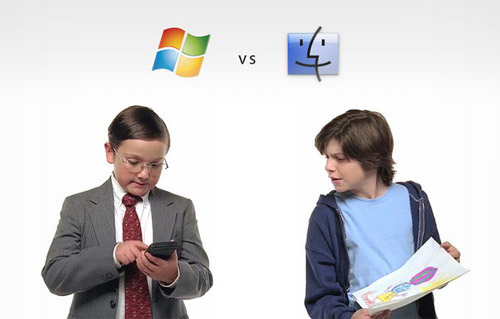

Mac vs Windows PC - Alle ting der er værd at vide før du vælger ny computer.
Der findes mange spørgsmål her i livet, og man kan være uenig med andre om mange ting. Men et af livets helt store spørgsmål i det 21.århundrede, der altid starter en stor ophedet diskussion, er spørgsmålet om man skal vælge PC eller Mac.
”*”For at holde objektivitetens skyld vil jeg informere om at denne artikel er skrevet på min 13’inch Macbook Pro ”*”
Ydelse – Mac vs. Windows PC.
En Mac er lynhurtig til at starte op, hvor der typisk går 3 til 4 sekunder på en Macbook. Det skyldes det unikke samspil mellem software og hardware.
Hvad angår programmer og læsning af filer og data er det en jævnbyrdig kamp. Her handler det nemlig om hvilket hardware og specifikationer man i har i sin computer, En Mac og en Windows PC med samme specifikationer vil derfor typisk performe lige hurtigt
Stabilitet – Mac vs. Windows PC.
Det første års tid med en Windows PC kører ofte smerte og stressfrit, når du har fået afinstalleret alt bloatwaren (Uønskede programmer fra fabrikanten) efter det første år begynder en form for træthed, der oftere ses i de billige modeller.
En årsag til denne træthed er ofte at computer fabrikanten ofte ikke selv står for hardwaren eller software, Dette problem findes dog ikke ved Mac, da Apple står for produktionen af både hardware og software. Du vil derfor som udgangspunkt få en bedre og mere stabil computeroplevelse ved at vælge en Mac frem for Windows PC.
Design – Mac vs. Windows PC.
Apple er kendt for sit stilrene og enkle design. En Mac er fremstillet i Aluminium, hvilket går at designlinjen er simpel, og Apples varemærke er som med alt andet deres Apple logo på bagsiden.
Hos Windows pc’er findes der ikke en entydig tendens grundet antallet af producenter. Windows pc’er er ofte lavet af sort plastik, det skal dog siges at producenter som Samsung og Microsoft er begyndt i de senere år at lave deres high-end computere af Aluminium.
Pris – Mac vs. Windows PC.
Hvis man kun kigger på specifikationer er der ofte mange penge at spare på at købe en Windows PC. Men hvis man så tilføjer faktorer som Batterilevetid, kvalitet og programmerne som følger med så ser regnestykket lidt anderledes ud.
Skal du købe en Windows PC med nøjagtig samme kvalifikationer og specifikationer som en Mac, så er prisen ofte omkring 10% billigere ved en Windows PC. For ja, Apple er et ekstremt dyrt produkt. Men som alt andet er det en kvalitets vare og man får i dette tilfælde også alt man betaler for.